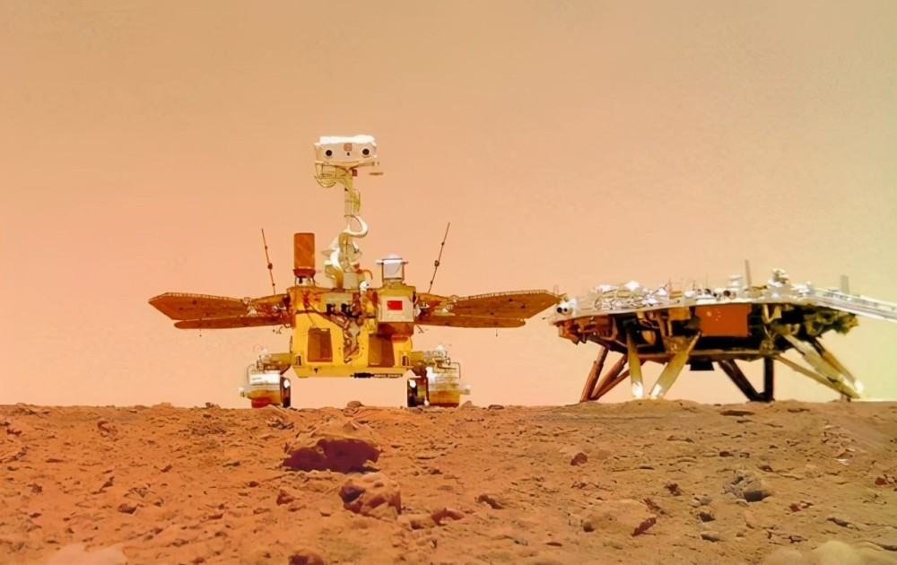
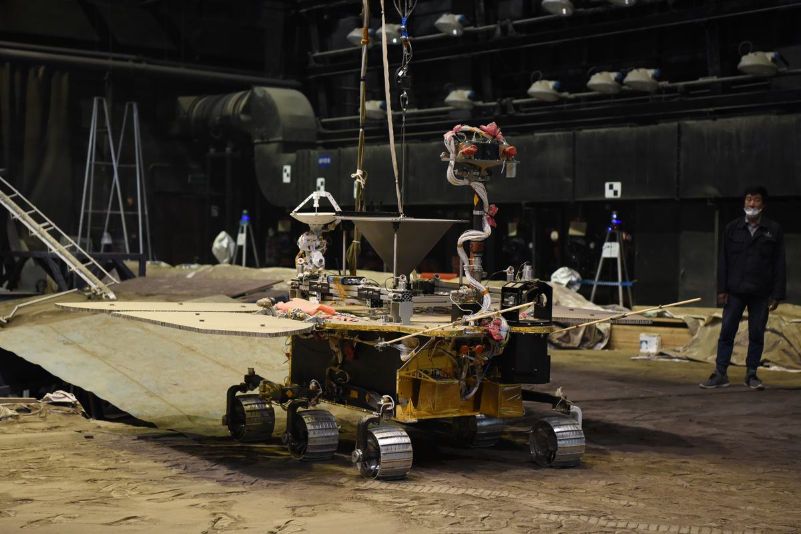
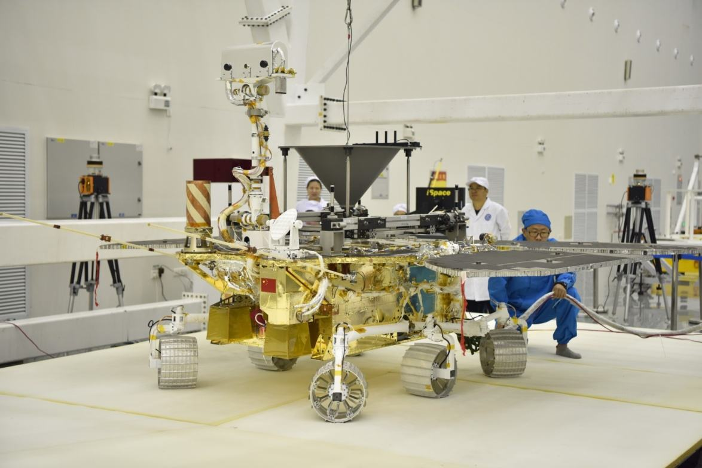

月球探测和火星探测是国家科技重大专项，星球车是实现大范围移动探测的核心装备，而移动系统是星球车最为关键的组成部分。项目团队在2004-2013年期间设计并研制了月球车移动系统，在2013-2020年期间设计并研制了火星车移动系统。本项目重点阐述火星车移动系统。
针对美国被动悬架式火星车出现的通过性问题，采用主被动复合悬架方案，突破了轮式滚动对牵引力的限制，大幅提高了火星车脱陷和爬坡性能。提出了主被动复合式悬架自由度设计准则；发明了具有蠕动功能的主被动复合式火星车移动系统构型；结合火表特殊环境要求，研制出火星车主被动复合式移动系统。该移动系统具有蠕动脱陷、蠕动爬坡、车厢升降防托底、悬架主动折展、车轮抬起、全向移动等功能，解决了美国火星车移动系统存在的问题。我国复合式移动系统占火星车总重17.4%，低于美国被动式移动系统的20%。
脱陷和爬坡时车轮处于大沉陷、高打滑状态，受到滚动牵引力、推土阻力、轮轴推/拉力的复杂作用，现有理论无法适用。根据车轮运动和受力特点，将轮-壤作用关系划分为驱动轮、脱陷轮和止退轮三类，继而建立了驱动轮滑转沉陷本构模型、揭示了脱陷轮阻力系数与推送距离间的规律、建立了止退轮最大止退力模型。创建了火星车蠕动脱陷、蠕动爬坡的运动控制策略，使我国火星车可稳定、快速地脱离深达2倍车轮半径的沉陷，最大爬坡角达25°；美国火星车脱离1倍车轮半径的沉陷耗时冗长、策略复杂且效果不明显，最大爬坡角是15°。
由于无法长时间、大范围模拟星球低重力场，因此建立重力场-悬吊力等效转换理论模型，将模拟“场”等效转换为模拟“轮地接触力”，该方法对于多类星球车具有普遍适用性；发明了悬吊力等效施加机构、悬吊点六自由度位姿跟踪控制技术；研制出火星车整车运动性能模拟验证系统。在国际上首次实现了火星车整车的低重力运动性能模拟验证，具有运动范围大、试验时间长、模拟精度高的特点。
本项目社会效益显著，“祝融号”火星车已成功开始巡视探测，主被动复合式火星车移动系统是我国“天问一号”的技术亮点。
本项目获发明专利66项、软件著作权8项。获省部级技术发明一等奖2项。
蠕动行驶原理：通过控制车轮前后间距的伸缩，使部分车轮具有向后方推土的趋势，将向后推土的阻力转化为向前的牵引力，提高星球车通过性能。行驶过程中轮距伸缩的动作形似蠕动。
1) 提出了具有蠕动功能的主被动复合式悬架自由度设计准则
悬架是移动系统中连接车厢与车轮的部分。具有蠕动功能的主被动复合式悬架含有被动自由度和主动自由度：被动自由度保证车轮与崎岖地面的贴合；主动自由度用于控制悬架变形。
（1）悬架被动自由度的设计准则：记移动系统车轮数和悬架被动自由度数为m和n，“ n = m – 3 ”是“所有车轮在任意崎岖地形上同时着地”的充要条件。锁止悬架部分被动自由度使n < m – 3，获得抬起部分车轮的被动自由度必要条件；锁止被动自由度数等于可抬起的车轮数。抬起车轮可实现辅助脱陷或故障车轮隔离。
（2）悬架主动自由度的设计准则：在悬架中设置主动自由度，通过主动自由度控制悬架变形：控制各轮前后间距周期性的伸缩，实现蠕动运动；控制各轮竖直方向相对位置关系调整，实现抬轮或车厢高度调整运动。
（3）蠕动/轮式行驶模式切换准则：采用主动或被动悬架行驶模式时，悬架被动自由度都应满足“n = m – 3”；在主动悬架行驶模式下，主动自由度周期性调整各轮前后间距，各车轮按节拍转动或停止，实现整车慢速蠕动行驶，该模式用于蠕动脱陷和蠕动爬坡工况；在被动悬架行驶模式下，主动自由度不工作，主被动复合悬架退化为被动悬架，实现快速轮式行驶，该模式用于常规移动工况。
2) 发明了具有蠕动脱陷等功能的主被动复合式火星车移动系统构型
（1）建立了具有蠕动功能的主被动复合式移动系统构型图谱。在左右悬架采用差动机构连接的前提下，基于主被动复合悬架自由度设计准则，建立变轮-臂间距类移动系统构型11种，通过车轮推出机构实现车轮与其摇臂连接点前后间距的伸缩；变摇臂张角类移动系统构型23种，通过摇臂张角变化实现车轮前后间距的伸缩。
（2）具有蠕动功能的主被动复合式火星车移动系统构型优选。变摇臂张角类移动系统的优点：主动关节数量少，系统复杂程度低，可同时实现车轮蠕动与车厢高度调节。因此，按照继承性好、轮压均布、主动关节少、系统复杂程度低等原则建立评价方法，结合工程约束条件，优选得到六轮变主摇臂张角构型。
3) 设计并研制出火星车主被动复合式移动系统
（1）发明了主动张角调节-被动差动均姿的复合角度调整机构。此机构是具有蠕动功能的主被动复合式火星车移动系统的核心机构。中部被动差动机构作用：在被动和主动悬架模式下，使与系杆固连的车厢俯仰角都等于两侧主摇臂整体俯仰角的平均值，实现车厢与两侧悬架间的角度均化。差动机构两侧的主动张角调节机构作用：利用行星轮系的单输入双输出特性，通过单个驱动按比例同时控制主摇臂张角和车身俯仰角，使张角调节与车厢姿态变化解耦。
（2）研制出火星车主被动复合式移动系统。该系统具有高低温适应性强、防尘等级高、轻量化程度高等特点。具备以下美国火星车没有的功能：蠕动行驶、车厢升降（高度为 0～500mm）、车轮抬升（高度为 0～300mm）、全向行驶（六轮转向）。
1) 建立了蠕动状态下的轮-壤相互作用模型
根据蠕动工况中车轮运动状态特点，将轮壤作用关系分为驱动轮、脱陷轮和止退轮。蠕动脱陷工况中，车轮运动状态在脱陷轮和止退轮之间切换；蠕动爬坡工况中，车轮运动状态在驱动轮和止退轮之间切换。
（1）建立了“驱动轮”的轮-壤作用滑转沉陷本构模型。基于单轮和整车试验，建立了驱动轮的轮-壤作用滑转沉陷本构模型，解决了经典模型中未考虑沉陷量随滑转率变化的问题，奠定了星球车轮-壤作用力学理论基础。
（2）揭示了“脱陷轮”前进阻力系数与推送距离之间的规律。定义脱陷轮的前进阻力系数λfc为推送车轮阻力与法向支持力之比。通过单轮试验，获得了脱陷轮在不同滑转率/滑移率时进行脱陷的推送阻力系数。
（3）建立了“止退轮”的最大止退力模型。基于切应力-正应力间关系、朗肯土力学和太沙基弹性压密核理论，考虑车轮对土壤的压实作用、轮前土壤的主动滑移和轮后土壤的被动滑移，建立了止退轮的最大止退力计算模型。
2) 创建了火星车蠕动脱陷运动控制策略
根据脱陷轮前进阻力系数和止退轮最大止退力模型，结合蠕动脱陷试验，确定了最佳的前向和后向蠕动脱陷时各轮的滑转率、主摇臂前段摆动区间和运动节拍，以两个运动节拍为一个蠕动脱陷周期，建立了蠕动脱陷控制策略。
3) 创建了火星车蠕动爬大角度坡运动控制策略
根据驱动轮本构模型和止退轮的最大止退力模型，结合蠕动爬大角度坡试验，确定了最佳的前向和后向蠕动爬坡时各轮的滑转率、主摇臂前段摆动区间和运动节拍，以两个运动节拍为一个蠕动爬坡周期，建立了蠕动爬大角度坡控制策略。
1) 发明了基于场-力等效转换的宇航空间机构低重力模拟方法
（1） 建立了宇航空间机构的重力场-悬吊力等效转换理论模型。 提出了真实/模拟低重力场中机构动力学行为一致性的等效原则，建立了重力场-悬吊力等效转换的充要条件，获得了串联、并联、混联空间机构悬吊力解系的统一化解析表达。
（2） 发明了星球车整车运动性能验证的低重力模拟方法。将恒定的单点悬吊力竖直作用于车厢内理论悬吊点，使星球车轮压总和达到低重力状态预期值；将多个随悬架姿态被动变化的“轮压校正转矩”作用于各车轮，实现崎岖地形中星球车轮压与星球重力场中的轮压动态等效。
（3）发明了具有三转动自由度被动自适应功能的星球车悬吊力等效施加机构。使理论悬吊点-车厢球铰点构成的几何图形与力等效施加机构上球铰点构成的图形位似全等。此机构被动自适应车厢三自由度姿态，将作用于车厢外部悬吊力始终等效作用于车厢内部的理论悬吊点。
2) 发明了悬吊点三平动自由度的高精度大范围跟踪控制技术
（1）发明了悬吊点水平位置的高精度大范围跟踪技术。针对火星车的大范围整车低重力模拟，提出粗精耦合的双层冗余跟踪方案。一级跟踪平台采用低频、大滞后控制策略，实现了大惯量、低刚度跟踪平台的大范围运动控制与振动抑制；低惯量、高精度的二级跟踪平台采用高频、微超调控制策略，解决了悬吊点跟踪滞后、精度差的控制难题。
（2）发明了主被动结合式高精度恒悬吊力控制技术。提出主被动结合式恒悬吊力系统方案，使用被动缓冲机构抑制高频扰动分量并降低带宽需求，使用电机主动抑制对象竖直运动的中低频扰动分量。发明了低惯量、低刚度、工作点大范围可调的被动缓冲机构，解决了悬吊索高刚度带来的悬吊力随微小干扰位移剧烈波动的难题。
3)研制出火星车整车运动性能模拟验证系统
设计并研制出火星车整车运动性能模拟验证系统。最大的运动跟踪范围30m×30m×4m；40t跟踪系统在30m×30m运动范围内的二维跟踪误差引起的水平干扰力小于悬吊力的3‰（1σ）；悬吊索长10m，悬吊力控制误差小于5‰（1σ）；低重力轮压模拟误差小于5%。成功完成了火星车多工况运动性能模拟验证。在国际上首次实现了模拟火星重力的火星车整车大范围、长时间、高精度运动性能验证。

